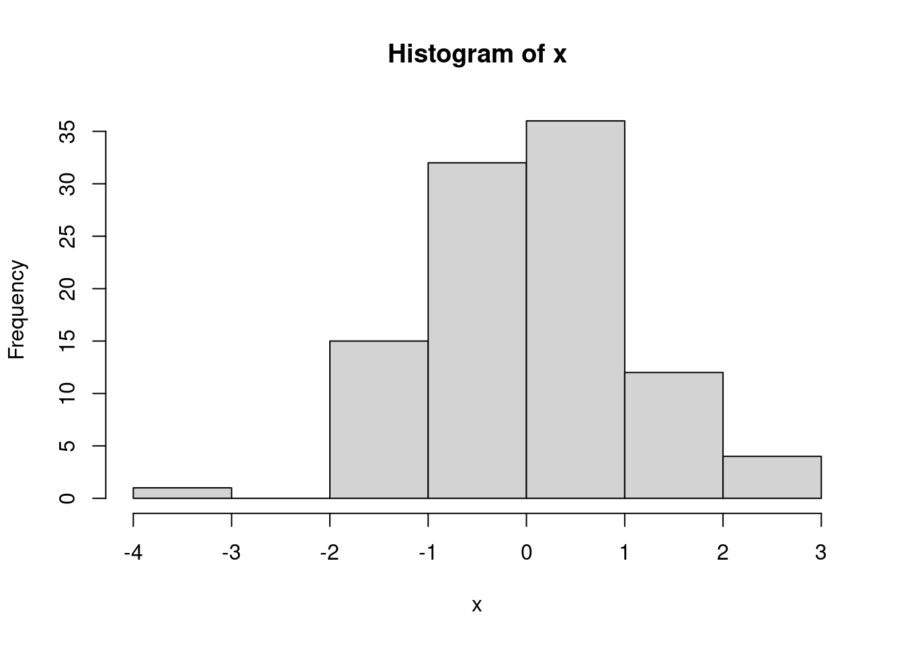
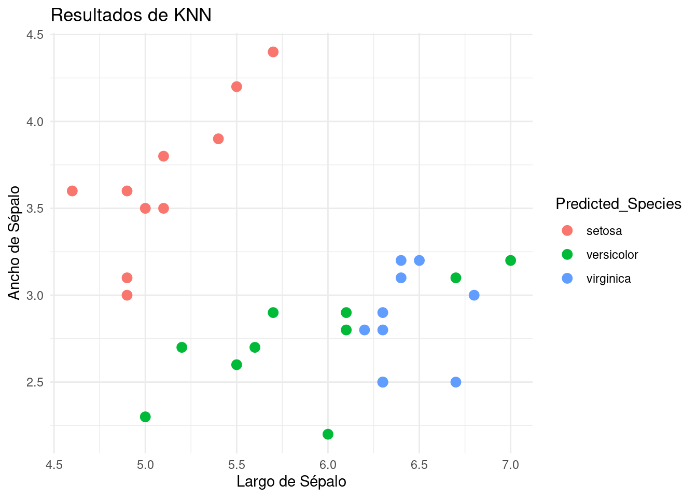
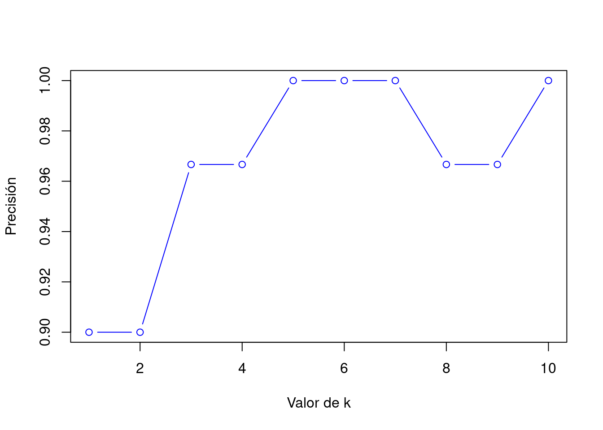

---
title: "Mi Primer Documento"
author: "Tu Nombre"
date: "`r Sys.Date()`"
output: html_document
---Material 1 Oscar
Introducción RMarkdown
Es la combinación de markdown, código en R y su evaluación. Esto esta englobado en un archivo .Rmd el cual tiene:
YAML (Meta datos): La sección YAML al principio del archivo contiene metadatos como título, autor, fecha y otros datos que se utilizan para configurar el documento.
Markdown: El texto del documento se escribe en Markdown, un lenguaje de marcado ligero y fácil de leer. El Markdown se utiliza para definir la estructura y el formato del texto, incluyendo títulos, párrafos, enlaces, listas, etc.
Código R: El archivo
.Rmdtambién contiene código R, que se ejecuta para generar gráficos, tablas y otros resultados que se incluyen en el documento. El código R se encapsula dentro de bloques de código, denotados por triple barras inversas (`````) y se puede personalizar con opciones comoechoyevalpara controlar la visualización y evaluación del código.
Estructura de un documento .Rmd
- YAML
Secciones con encabezados
#,##, ###.Codigo en R usando bloques
summary(mtcars) mpg cyl disp hp
Min. :10.40 Min. :4.000 Min. : 71.1 Min. : 52.0
1st Qu.:15.43 1st Qu.:4.000 1st Qu.:120.8 1st Qu.: 96.5
Median :19.20 Median :6.000 Median :196.3 Median :123.0
Mean :20.09 Mean :6.188 Mean :230.7 Mean :146.7
3rd Qu.:22.80 3rd Qu.:8.000 3rd Qu.:326.0 3rd Qu.:180.0
Max. :33.90 Max. :8.000 Max. :472.0 Max. :335.0
drat wt qsec vs
Min. :2.760 Min. :1.513 Min. :14.50 Min. :0.0000
1st Qu.:3.080 1st Qu.:2.581 1st Qu.:16.89 1st Qu.:0.0000
Median :3.695 Median :3.325 Median :17.71 Median :0.0000
Mean :3.597 Mean :3.217 Mean :17.85 Mean :0.4375
3rd Qu.:3.920 3rd Qu.:3.610 3rd Qu.:18.90 3rd Qu.:1.0000
Max. :4.930 Max. :5.424 Max. :22.90 Max. :1.0000
am gear carb
Min. :0.0000 Min. :3.000 Min. :1.000
1st Qu.:0.0000 1st Qu.:3.000 1st Qu.:2.000
Median :0.0000 Median :4.000 Median :2.000
Mean :0.4062 Mean :3.688 Mean :2.812
3rd Qu.:1.0000 3rd Qu.:4.000 3rd Qu.:4.000
Max. :1.0000 Max. :5.000 Max. :8.000 Texto básico y formato
Negritas, Itálicas y
Código en líneaListas numeradas y con viñetas:
Item 1
Item 2
Agregar enlaces e imágenes
- Enlaces
[Enlace a Google](https://www.google.com)- Imágenes
Bloques de código en R
- Inserción de código en R:
x <- rnorm(100)
hist(x)
Configuración de chunks
Opciones de chunks (
echo,eval,message,warning).
Tables en RMakdown
Creación de tablas con knitr::kable().
knitr::kable(head(mtcars), caption = "Tabla de ejemplo")| mpg | cyl | disp | hp | drat | wt | qsec | vs | am | gear | carb | |
|---|---|---|---|---|---|---|---|---|---|---|---|
| Mazda RX4 | 21.0 | 6 | 160 | 110 | 3.90 | 2.620 | 16.46 | 0 | 1 | 4 | 4 |
| Mazda RX4 Wag | 21.0 | 6 | 160 | 110 | 3.90 | 2.875 | 17.02 | 0 | 1 | 4 | 4 |
| Datsun 710 | 22.8 | 4 | 108 | 93 | 3.85 | 2.320 | 18.61 | 1 | 1 | 4 | 1 |
| Hornet 4 Drive | 21.4 | 6 | 258 | 110 | 3.08 | 3.215 | 19.44 | 1 | 0 | 3 | 1 |
| Hornet Sportabout | 18.7 | 8 | 360 | 175 | 3.15 | 3.440 | 17.02 | 0 | 0 | 3 | 2 |
| Valiant | 18.1 | 6 | 225 | 105 | 2.76 | 3.460 | 20.22 | 1 | 0 | 3 | 1 |
Referencias a ecuaciones, figuras y tablas
{#figura1}Como se ve en la Figura \@ref(figura1)...K-Nearest Neighbors (KNN) en R
Para implementar KNN en R, es necesario instalar algunas librerías.
# Instalamos las librerías necesarias
install.packages("class") # Paquete para KNN
install.packages("caret") # Paquete para manejo de datos y validación cruzada
install.packages("ggplot2") # Paquete para visualización (opcional)Cómo funciona KNN
KNN clasifica un nuevo dato basado en la distancia a sus vecinos más cercanos.
Los pasos para la clasificación con KNN:
Elegir el número de vecinos
k.Calcular la distancia entre el punto nuevo y todos los puntos del dataset.
Clasificar el nuevo punto basado en la mayoría de los vecinos más cercanos.
Normalización de datos
KNN es un algoritmo basado en distancia, por lo que es muy sensible a la escala de los datos. Normalizar o escalar las variables es crucial.
# Ejemplo de normalización
data(iris)
# Seleccionamos las variables predictoras
predictors <- iris[, 1:4]
# Normalizamos las variables predictoras
normalize <- function(x) {
return((x - min(x)) / (max(x) - min(x)))
}
predictors_normalized <- as.data.frame(lapply(predictors, normalize))
# Mostramos las primeras filas de los datos normalizados
head(predictors_normalized) Sepal.Length Sepal.Width Petal.Length Petal.Width
1 0.22222222 0.6250000 0.06779661 0.04166667
2 0.16666667 0.4166667 0.06779661 0.04166667
3 0.11111111 0.5000000 0.05084746 0.04166667
4 0.08333333 0.4583333 0.08474576 0.04166667
5 0.19444444 0.6666667 0.06779661 0.04166667
6 0.30555556 0.7916667 0.11864407 0.12500000División de los conjuntos de entrenamiento y prueba
Antes de aplicar KNN, es fundamental dividir los datos en un conjunto de entrenamiento y un conjunto de prueba.
# Cargamos la librería caret
library(caret)
# Dividimos el dataset en 80% entrenamiento y 20% prueba
set.seed(123)
trainIndex <- createDataPartition(iris$Species, p = 0.8,
list = FALSE,
times = 1)
# Conjunto de entrenamiento y prueba
trainData <- iris[trainIndex, ]
testData <- iris[-trainIndex, ]Implementación de KNN en R
En este ejemplo, vamos a usar el dataset iris para predecir la especie de una flor en base a sus características numéricas (largo y ancho de pétalos y sépalos).
# Cargamos la librería class para KNN
library(class)
# Aplicamos el modelo KNN
predicted_species <- knn(train = trainData[, 1:4],
test = testData[, 1:4],
cl = trainData$Species,
k = 3)
# Mostramos las predicciones
predicted_species [1] setosa setosa setosa setosa setosa setosa
[7] setosa setosa setosa setosa versicolor versicolor
[13] versicolor versicolor versicolor versicolor versicolor versicolor
[19] versicolor versicolor virginica virginica virginica virginica
[25] virginica versicolor virginica virginica virginica virginica
Levels: setosa versicolor virginicaEvaluación del modelo
Evaluar la precisión del modelo es esencial para ver si está funcionando correctamente.
# Comparamos las predicciones con las etiquetas verdaderas
accuracy <- sum(predicted_species == testData$Species) / nrow(testData)
# Mostramos la precisión
print(paste("Precisión del modelo: ", round(accuracy * 100, 2), "%"))[1] "Precisión del modelo: 96.67 %"Visualización de resultados
Una forma útil de visualizar los resultados es usar gráficos. Podemos ver cómo KNN clasifica los puntos usando gráficos de dispersión.
# Cargamos ggplot2 para gráficos
library(ggplot2)
# Agregamos las predicciones al dataset de prueba
testData$Predicted_Species <- predicted_species
# Visualizamos los resultados de clasificación
ggplot(testData, aes(x = Sepal.Length, y = Sepal.Width, color = Predicted_Species)) +
geom_point(size = 3) +
labs(title = "Resultados de KNN", x = "Largo de Sépalo", y = "Ancho de Sépalo") +
theme_minimal()
Ajuste de Parámetros y Validación cruzada
Podemos probar diferentes valores de k para ver cuál da mejores resultados.
# Creamos una función para probar diferentes valores de k
evaluate_knn <- function(k_value) {
predicted_species <- knn(train = trainData[, 1:4],
test = testData[, 1:4],
cl = trainData$Species,
k = k_value)
accuracy <- sum(predicted_species == testData$Species) / nrow(testData)
return(accuracy)
}
# Probamos valores de k desde 1 hasta 10
k_values <- 1:10
accuracies <- sapply(k_values, evaluate_knn)
# Mostramos los resultados
plot(k_values, accuracies, type = "b", col = "blue", xlab = "Valor de k", ylab = "Precisión")
Validación cruzada
Es recomendable usar validación cruzada para obtener una estimación más precisa del rendimiento del modelo.
# Usamos trainControl para validación cruzada
train_control <- trainControl(method = "cv", number = 10)
# Aplicamos KNN con validación cruzada
knn_cv <- train(Species ~ ., data = iris, method = "knn",
trControl = train_control, tuneLength = 10)
# Mostramos los resultados del mejor k
print(knn_cv)k-Nearest Neighbors
150 samples
4 predictor
3 classes: 'setosa', 'versicolor', 'virginica'
No pre-processing
Resampling: Cross-Validated (10 fold)
Summary of sample sizes: 135, 135, 135, 135, 135, 135, ...
Resampling results across tuning parameters:
k Accuracy Kappa
5 0.9600000 0.94
7 0.9600000 0.94
9 0.9666667 0.95
11 0.9733333 0.96
13 0.9600000 0.94
15 0.9600000 0.94
17 0.9666667 0.95
19 0.9666667 0.95
21 0.9666667 0.95
23 0.9600000 0.94
Accuracy was used to select the optimal model using the largest value.
The final value used for the model was k = 11.KNN es un algoritmo de clasificación simple pero poderoso que se basa en la proximidad entre puntos de datos.
Es crucial preparar bien los datos normalizando las variables y seleccionando un valor adecuado de
k.Se pueden mejorar los resultados usando técnicas como la validación cruzada.